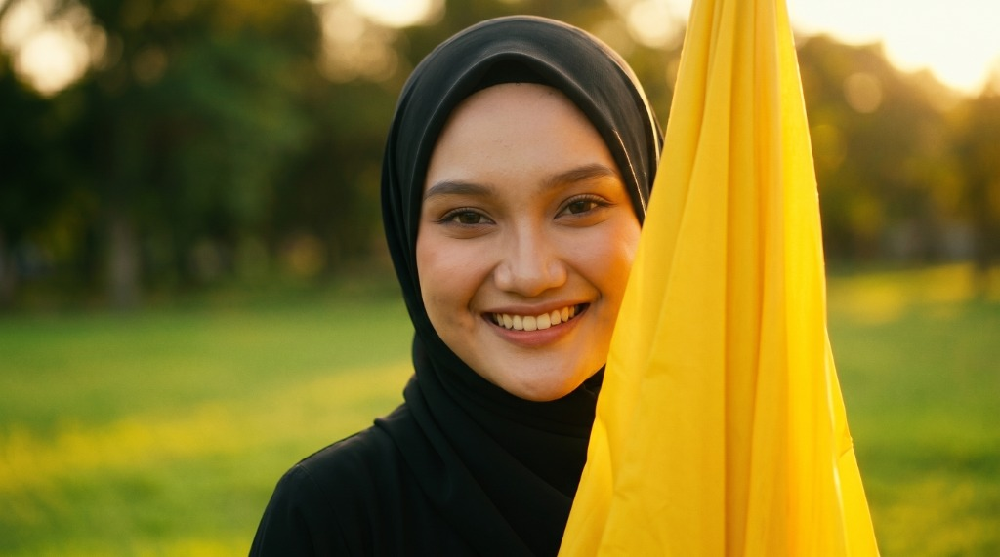
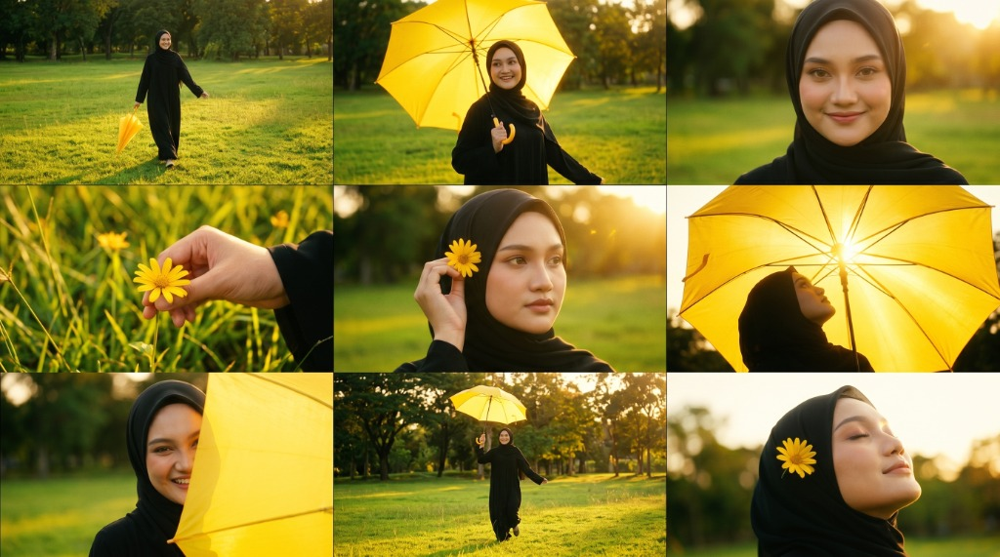
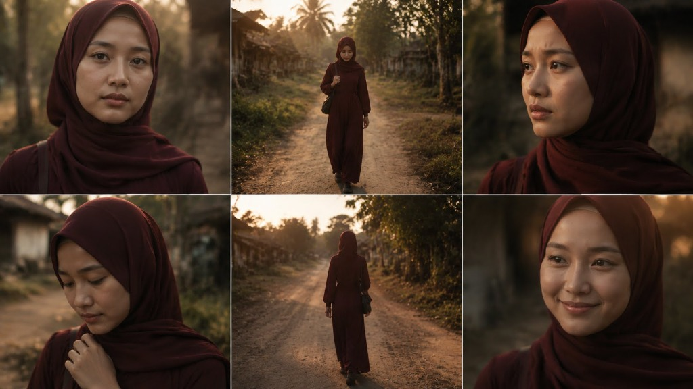

Epik Dunia Studio membantu kreator membuat shot list, storyboard, prompt gambar, prompt video, dan panduan visual untuk produksi music video AI.
Setiap fitur dibuat untuk membantu kreator mengubah ide mentah menjadi arahan visual yang rapi, siap dipakai untuk produksi AI video, storyboard, dan music video.


Masukkan lirik lagu, lalu sistem membantu menyusun konsep video musik lengkap dengan mood, scene, angle kamera, emosi, dan arah visual.
Ubah cerita pendek, naskah, atau ide adegan menjadi daftar shot yang jelas untuk kebutuhan produksi video.

Ubah lirik menjadi konsep visual cinematic.
Lihat Detail →Bangun storyboard sinematik dari ide, konsep, atau naskah video. CineBoard Pro membantu menyusun adegan, komposisi kamera, shot type, pencahayaan, dan alur visual agar konsep video terlihat lebih siap produksi.
Lihat Detail →Ubah cerita pendek, skenario, atau narasi menjadi shot list yang jelas dan terstruktur. StoryFrame AI membantu menentukan urutan adegan, framing kamera, ekspresi karakter, transisi, dan kebutuhan visual setiap scene.
Lihat Detail →Buat prompt gambar dan prompt video yang lebih detail, cinematic, dan mudah dipakai di AI visual generator. VisualPrompt Studio membantu menyusun style, lighting, camera lens, mood, action, dan negative prompt agar hasil visual lebih konsisten.
Lihat Detail →Rancang konsep music video seperti seorang director. MV Director Engine membantu menyusun tema visual, sequence adegan, shot list, camera movement, performance scene, storyline, dan continuity untuk produksi MV AI yang lebih matang.
Lihat Detail →Siapkan naskah voice over, narasi, hook konten, dan arahan gaya bicara untuk kebutuhan video, storytelling, promosi, atau konten pendek. VoiceCraft Studio membantu membuat teks terdengar lebih natural, emosional, dan siap diproses ke text-to-speech.
Lihat Detail →Bantu kreator musik membuat hasil audio terdengar lebih rapi, seimbang, keras, jernih, dan siap upload ke YouTube, Spotify, TikTok, maupun platform musik lainnya. App ini dirancang untuk membantu proses mastering lagu secara cepat dengan panduan AI.
Lihat Detail →Ubah ide aplikasi menjadi rencana produk siap Pakai.
Buka App EDS Workspace